互惠动态
|
|
开学啦，要不咱也先像“国民公公”那样定个小目标？！| 笑喷了
近日，王健林做客鲁豫的节目《鲁豫大咖一日行》，不仅曝光了他的办公室和他的收藏王国，商业理想。在访谈环节，王健林说的一句话却意外走红。
他在谈到很多学生一上来就说：“我要当首富！”这件事情时，耐心教导说：“先定一个小目标，比方说，我先挣它一个亿！”
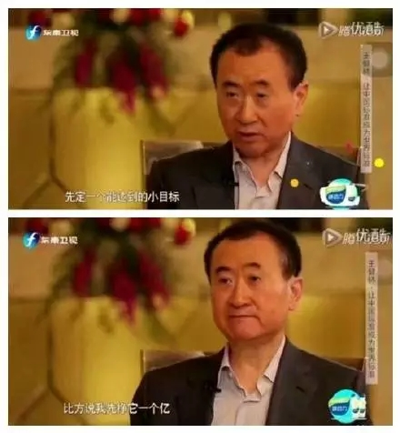
校长们、老师们、同学们！
听一听！瞧一瞧！
这就是霸气侧漏的“国民公公”！
其实，咱也可以试试这么定目标↓
如果你是名学生
你可以自信地说
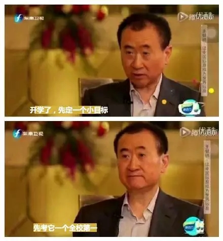
如果你是名老师
你可以自豪地讲
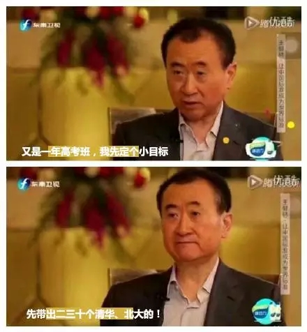
如果你是一所中学校长
你也可以霸气地说
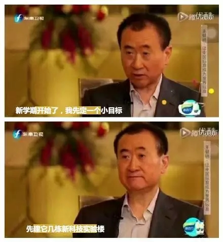
如果你是一名家长
没关系，你可以这么说
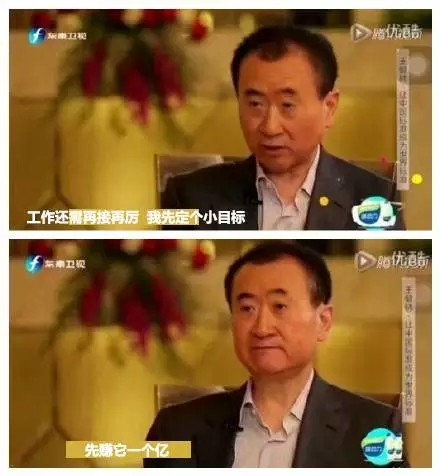
是不是感觉很爽！
是不是感觉很爽！
是不是感觉很爽！
你想得也太美了吧！
估计睡着的亲们都能笑醒吧。
可是，小编要给某些朋友泼盆凉水啦！

学生考第一是有前提的，如果之前的成绩是倒数，现在一开学就要求自己考第一，就有点太难为自己了。
老师希望学生成绩优异是正常现象，但如果不根据学生实际情况定教学计划，最后结果只能适得其反。
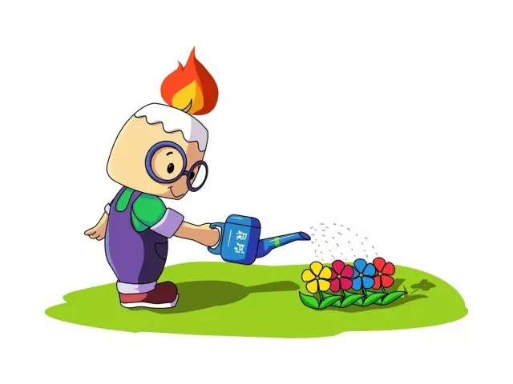
家长渴望多挣钱是好事，可是如果不脚踏实地，光在家里坐着喊口号可是最后连个零也赚不到啊。咱得根据实际情况来，如果您只是工薪阶层，小编想您还是老老实实上班吧！
校长们希望学校硬件牛气点，吸引更多学生来，壮大名气，可是如果您每个学期都制定这样的小目标，先弱弱问一句：钱呢？
一切的目标都要建立在实际情况的基础上，做人也要脚踏实地一点，按着事物的规律制定计划。
就如学习一样，有前期，中期，后期不同阶段的计划，跟着计划一步步来，小编相信，计划终有实现的那一天。
现在很多大学已经开学，中小学也即将开学，面对新的一个学年，你要不要先给自己定下一个能完成的小目标呢？
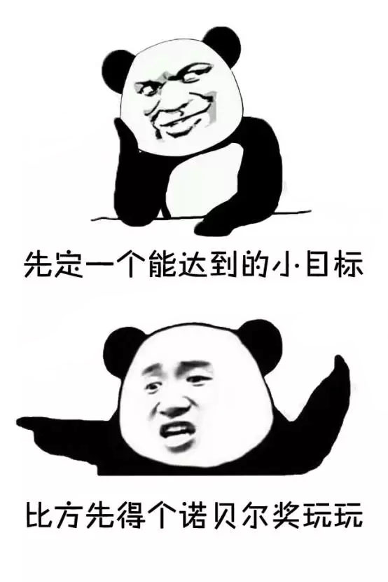
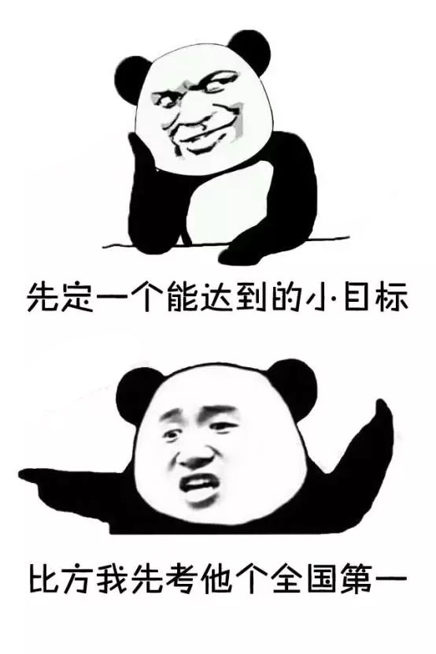
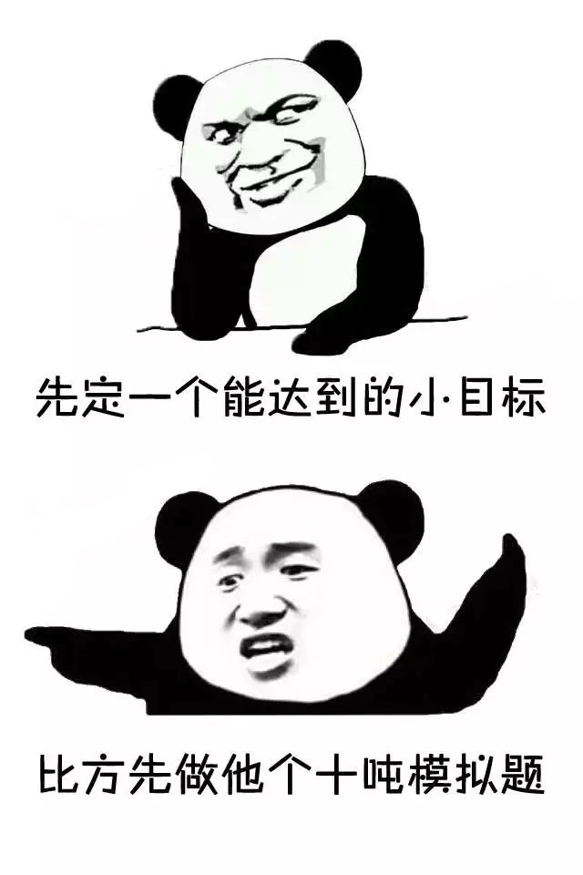
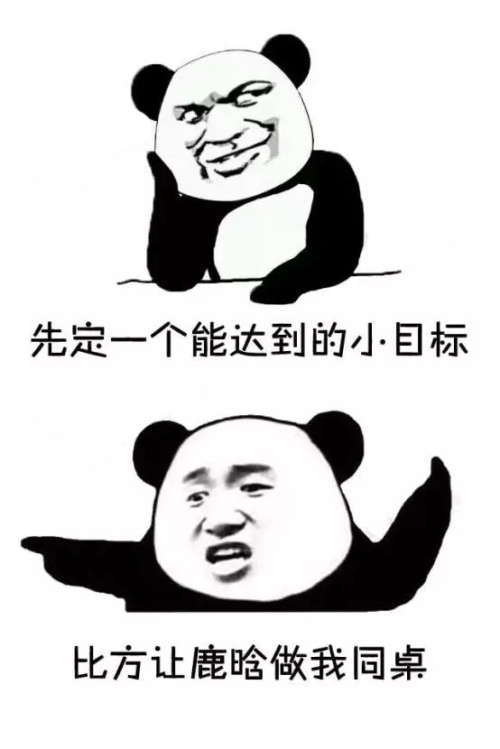
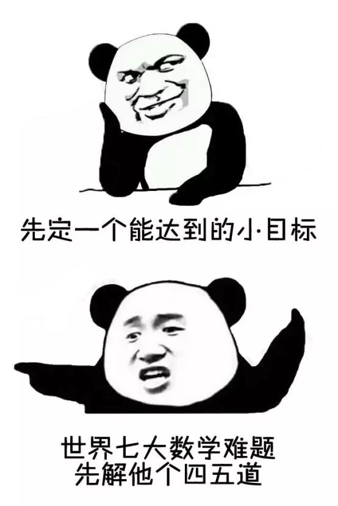
不说啦不说啦！有理想有抱负的小编要奔着成为大咖名写手的目标进发了↓
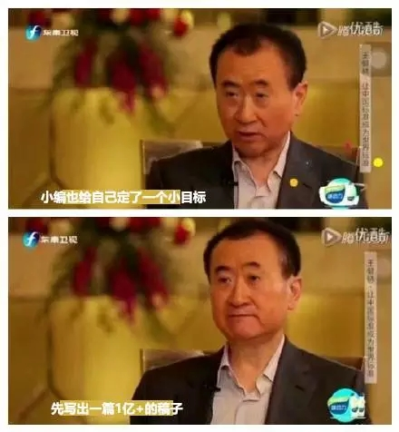

关于互惠，您了解得够多么？
请外国学生来家庭照顾孩子，辅导孩子外语？
只了解这些是不够的！
获取更多信息请参考以下方式：
联系ASC：
电话：86-21-61116069(上海中心）
86-25-66065662（南京中心）
手机：15601666586（可加微信）
Q Q：3259637585
微信：asc-center
邮箱：info@asc-center.com
网站：www.asc-aupair.com

感谢您对我们的关注